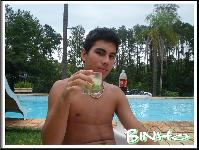

Fábio Soares Ribeiro Júnior

|
- Campeão do Troféu O Rei da quadra, 2006 - ACM - Associação Cristã de Moços
- Artilheiro do campeonato O Rei da quadra, 2006 - ACM - Associação Cristã de Moços
- Técnico em Informática, cursando - Escola Agrotécnica Federal de Inconfidentes - MG
|
Meu nome completo é Fábio Soares Ribeiro Júnior, 16, moreno, 1,77m de altura. Nasci e fui criado na
cidade de São Paulo. Nasci no Hospital Santa Marina, situado no bairro do Jabaquara, zona sul de São Paulo. Desde pequeno fui
acostumado a mudar diversas vezes de residência, seja por trabalho dos meus pais, ou por problemas com a vizinhança, sempre
estávamos de mudança. Aos meus 5 (cinco) anos de idade, 1997, fui presenteado com uma pequena menina, essa menina era a minha
irmã, o nome dela é Vitória e hoje ela tem 11 (onze) anos de idade. Na época do nascimento dela, quando ela tinha apenas alguns
meses de vida, a casa onde eu morava foi assaltada, no momento do assalto a babá e a minha recém-nascida irmã
estavam na casa, o ladrão as assustou, roubou alguns bens e as trancou no banheiro; o mais o importante o ladrão deixou, foi minha
irmã, sã e salva. Mais uma vez mudamos de casa, para um apartamento para ser mais preciso, talvez ali achássemos mais segurança.
Mudamos-nos mais algumas vezes, e finalmente paramos em uma casa, isso foi no ano de 2002, e até hoje minha família ainda vive
lá, atualmente estudo em uma escola de ensino técnico e médio em Minas Gerais, ingressei neste curso no começo do ano passado
e o concluirei no final do ano que vem, se Deus quiser!
Sempre estudei em escolas públicas, e como as pessoas mais conceituadas costumam dizer: "Quem faz a escola é o aluno", então,
isso não quer dizer que eu tenho mais ou menos conhecimento que certa pessoa só porque a escola que estudei foi particular
ou pública.
Hoje, com 16 anos, minha cabeça está voltada para a área de Direito e no momento é o que estou pensando em fazer na faculdade,
desde pequeno tinha vontade de ser um advogado, hoje cresci e meu sonho não é mais ser um advogado, mas não foge muito disso
não, penso em ser um Procurador de Justiça, sei que o caminho para chegar até lá é longo, difícil e que todos os dias minha
perseverança será posta em jogo, mas estou consciente do que quero e quando se quer algo na vida, não podemos desistir, temos
que correr atrás dos nossos sonhos, afinal, a vida é muito curta para se arrepender. Mas também não pense que eu tive essa idéia
fixa de cursar Direito na faculdade mantida intocável em mente durante toda a minha vida, já diversifiquei os pensamentos, surgiram idéias e vontades
que realmente não condizem com essa área, tais como a própria Educação Física. Sempre devemos estar com a mente aberta, aberta
para novas idéias, novos horizontes, novos rumos, porque se você fechar a sua mente e limitar um caminho para que essa idéia
não possa mais ser modificada, sua vida também vai se tornando limitada, seus sonhos mais difíceis de serem alcançados e suas
possíveis
realizações não vão sendo concretizadas. Então, se hoje, você tem um plano de vida, uma meta a ser alcançada, um objetivo,
escreva no papel onde você está e onde você pretende chegar, esse seu objetivo deve ter um prazo e deve ter atenção especial
para que ele possa ser realizado, existem dois tipos de objetivos: os em longo prazo e os a curto prazo, portanto, quando os
escrever no papel, não escreva à caneta, pois eles podem ser mudados, mudados pra melhor. Porém, você deve ter uma idéia centrada
e uma vital concentração nessa sua meta, fazendo isso, ela com certeza estará mais fácil de ser alcançada.
A vida é feita de desafios, e grande não é aquele que nunca caiu, mas sim aquele que caiu e conseguiu se levantar.
|
|

|
|
|
|
|
|
|

|
O que você achou desta página?
Copyright ® 1992-2008 Binho®, Todos os direitos reservados.